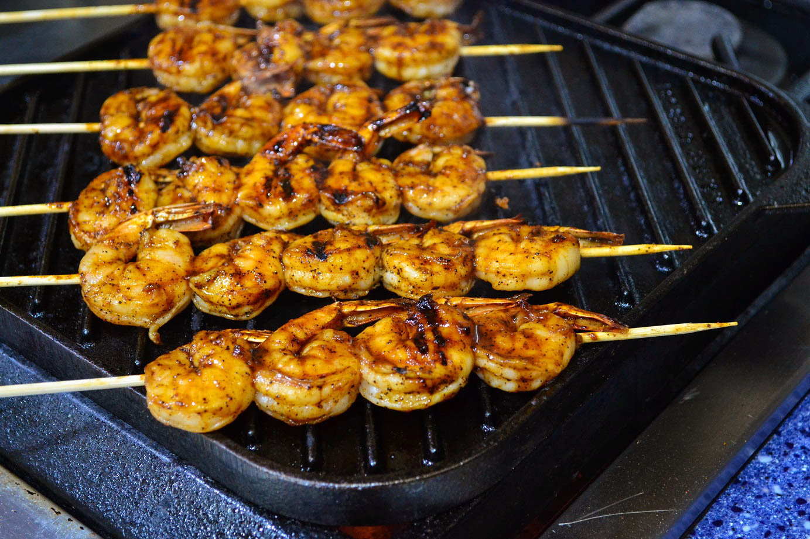

Home
Grilled garlic and herb shrimp

Yummy grilled shrimp
Ingredients
- 2 teaspoons ground paprika
- 2 tablespoons fresh minced garlic
- 2 teaspoons italian seasoning, or to taste
- 2 tablespoons fresh lemon juice
- 1/4 cup olive oil
- 1/2 teaspoon ground black pepper
- 2 teaspoons dried basil leaves
- 2 tablespoons brown sugar, packed
- 2 pounds large shrimp (21-25 per pound), peeled and deveined
Steps
- Whisk paprika, garlic, Italian seasoning, lemon juice, olive oil, pepper, basil, and brown sugar together in a bowl until thoroughly blended.
- Stir in shrimp and toss to evenly coat with the marinade. Cover and refrigerate at least 2 hours, turning once.
- Preheat an outdoor grill for medium-high heat. Lightly oil grill grate, and place about 4 inches from heat source.
- Remove shrimp from marinade, drain excess, and discard marinade.
- Place shrimp on preheated grill and cook, turning once, until opaque in the center, 5 to 6 minutes. Serve immediately.